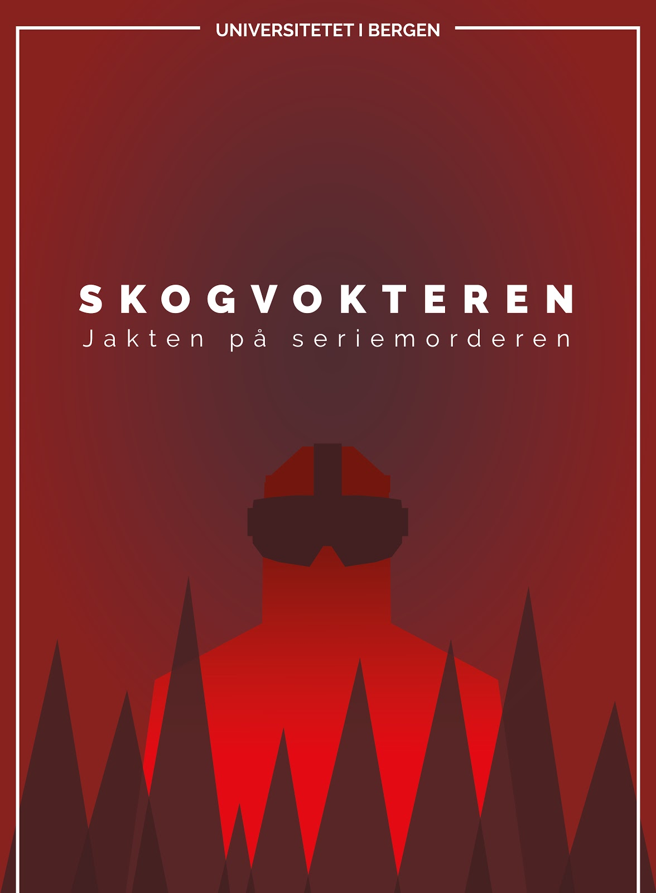
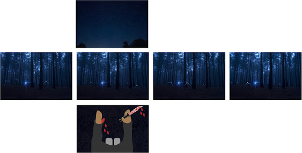
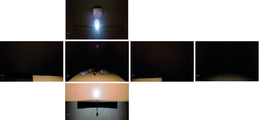

Portfolio
About
SYNNE GRINDHEIM
A Masters Student in Digital Design and Interactive Technologies

A VR EXPERIENCE: SKOGVOKTEREN
ABOUT
«Skogvokteren» is a VR experience that takes the user to both real places and virtual places, but through a fictional story. The fictional story follows a first-person perspective where the user is a serial killer. Firstly, you're standing in a dark forest where you kill your next victim and get caught by the police. Secondly, the story continues in an interrogation room where you're beinh told you're accountable for the murders and must spend the next 21 years in prison.
IN THE MAKING
To create this experience we used 360-images, 360-video, 3D-graphics and sound. We programmed the material by using the developing tool Unity. The scenes are experienced in a first-person perspective where the user is in the killer's shoes. The VR story is experienced through 5 scenes. To create these scenes we visualized them through storyboarding. We set the mood by inserting audio as walking in bushes and barking, and placed the sounds to appear from different areas.


©2020 Synne Grindheim